00
先给结论
问题不在“不够美”，
在于主语不是非遗。
我把 56 个页面逐页截了下来。最完整的视觉资产是纹样馆，最缺的却是手作本身：22 个手作只有 4 个有封面、0 个有视频；18 件作品只有 9 件有图、16 件匿名；传承人故事明确写着“合成教学叙事”。用户当然会觉得“不像非遗艺术疗愈”——因为页面里确实没有手艺。
56学生端页面（含子包）
22手作项目，其中 16 个上架
4有封面的手作，占 18%
0手作视频
01 / 非遗是标签
看得见口号，
看不见手。
推荐卡是绿色空块，详情页是灰渐变占位，作品墙是“纯文字作品”。非遗被做成了米黄卡片上的一行说明，而不是能被看见、被摸到、被学会的动作。
02 / 土黄是症状
暖纸底把所有
材料压成旧纸。
暖纸 #F6F1E7、暖金 #D9A441、纸纹与米白卡片叠在一起，靛蓝会发灰、青瓷会发黄、朱砂会发褐。绿色又被当成万能油漆：按钮、图标、开关、标签、悬浮球全是一个绿。
03 / 疗愈是机制
不是“非遗”
本身在疗愈。
证据支持的是“手作 + 文化叙事 + 社群交流”的组合，而不是一个非遗标签。当前 PHQ-9/GAD-7 与“疗愈”话术同时出现，是最危险的错位。
换底冷瓷白 #F1F4F1 + 墨 #111816；朱砂只做“一根线”；暖色只从材料本身来，不再给全站加暖黄滤镜。
换叙事一页只讲一件事。每个手作必须有真图、真传承人、真安全标注、真出处；没有就下架，不用空块和合成故事顶上。
换智能小织从“客服”变成“策展人”：选一件、陪一段、记住一点；AI 生成你的纹样指纹，而不是多说两句鸡汤。
01
56 页体检
不是细节脏，
是整栋房子没有主墙。
下面 5 张图集覆盖全部 56 个页面：真实后端、演示账号、iPhone 尺寸、逐页首屏。它们暴露的不是个别页面的圆角或字号，而是同一套“卡片 + 绿色 + 卡通”的模板被复制到了所有场景。
22手作项目 / 仅 16 个上架
4有封面的手作 / 0 个有视频
18社区作品 / 仅 9 件有图
0本地 covers 目录文件
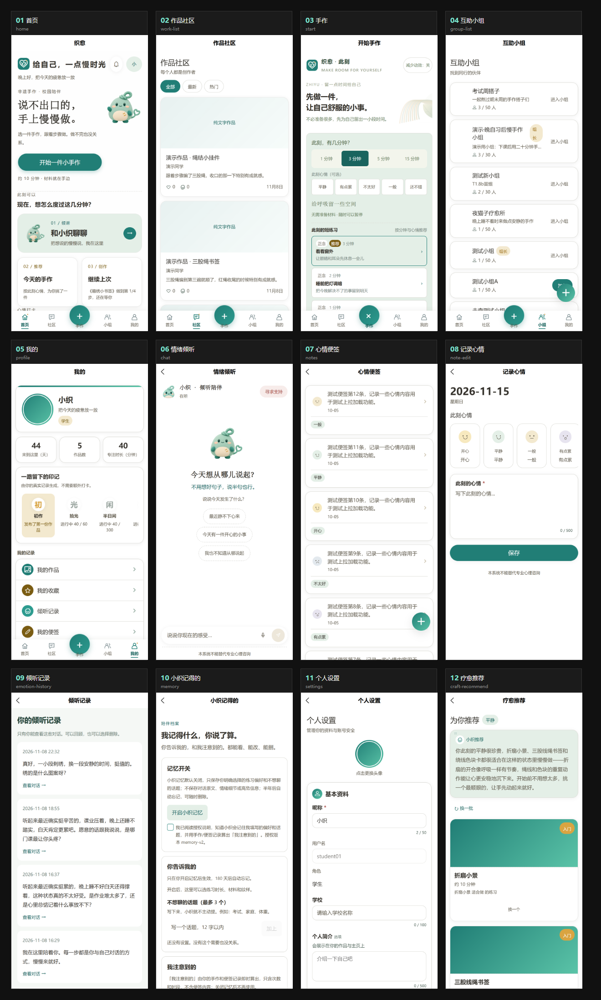
01–12 / 首页到疗愈推荐查看原图
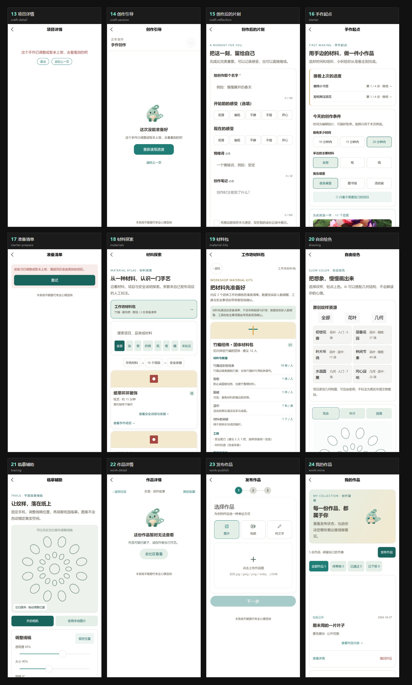
13–24 / 详情到我的作品查看原图
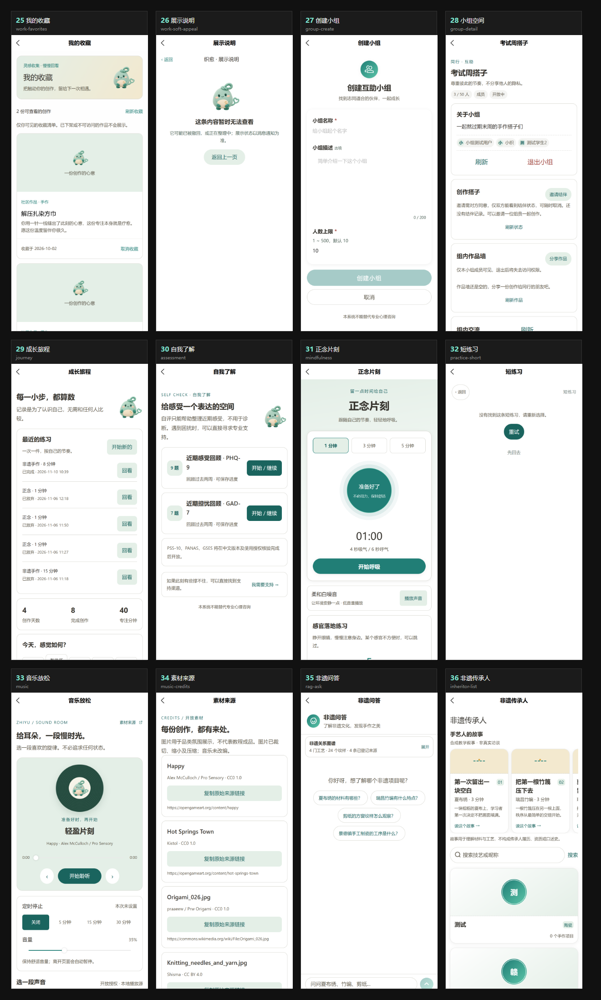
25–36 / 收藏到非遗问答查看原图
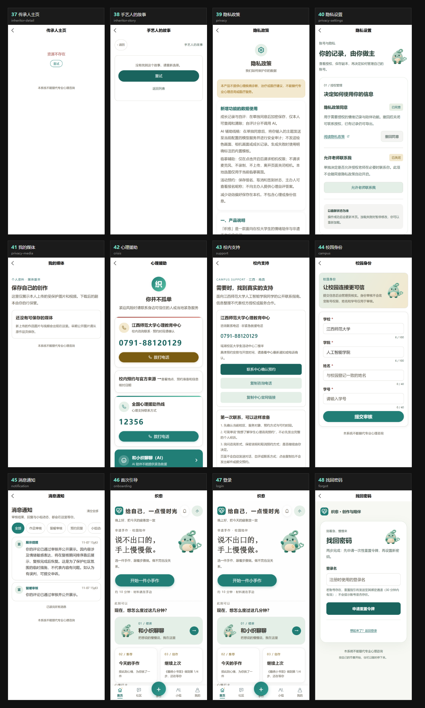
37–48 / 传承人到登录查看原图
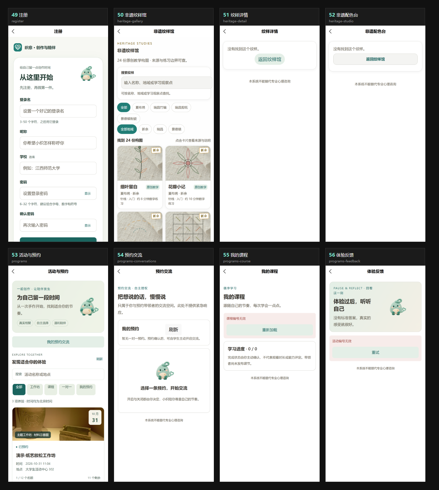
49–56 / 注册到体验反馈查看原图
十个最值得先动的页面
不是“最丑”的十个，而是最影响信任、理解与第一眼气质的十个。
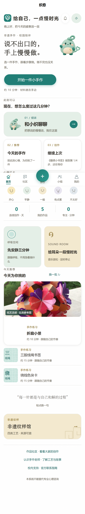
01 / 首页
八个模块抢一个主语
问候、情绪、手作、纹样、声音、数据、推荐、快捷入口全在首屏，手作与非遗被切成一行行小卡。用户不知道先看哪里，也不知道“这是一间工艺美术馆”。
- 删掉数据行、情绪行、快捷入口
- 只留“今日一器 / 小织一句话 / 继续上次”
- 首屏 60% 交给一张真材料大图
改造：全屏“今日一器”
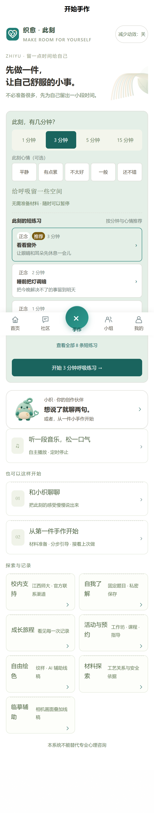
02 / 手作入口
“手作”标签下没有手作
首屏先问几分钟、心情、呼吸练习；真正的手作入口被压到第二屏。它像一个冥想 App 的工具箱，而不是一张工作台。
- 首屏只放一件手作 + 一个 3 分钟版本
- 呼吸、音乐移到“缓一缓”次级入口
- 取消悬浮大绿球，底部只留五个文字入口
改造：一张工作台，不是工具箱
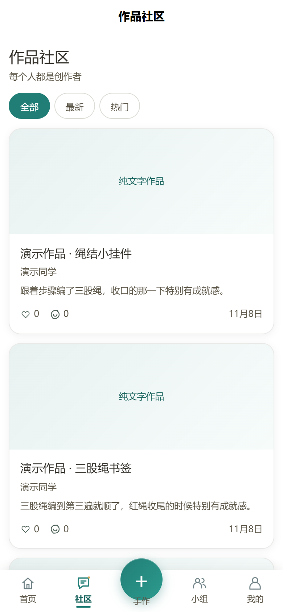
03 / 作品社区
社区没有作品
首屏两件都是“纯文字作品”，配“演示同学”。18 件作品里只有 9 件有图，16 件匿名。一个以“非遗艺术”为卖点的社区，第一眼却没有一张手作图。
- 发布必须带封面；无图作品不进社区
- 改成展览墙：4:5 大图 + 作者一句话
- “点赞”改“驻足”，评论区改“留言簿”
改造：展览墙
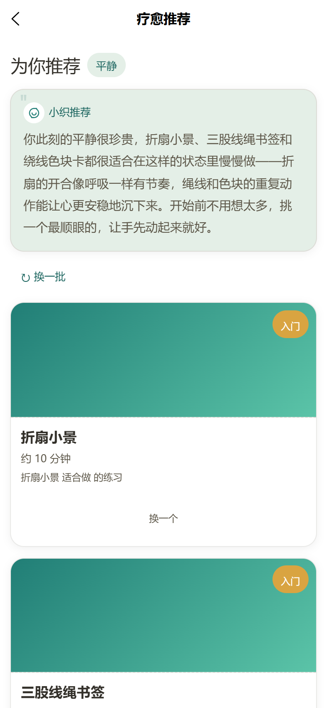
04 / 疗愈推荐
绿色空块 + 模板文案
三张推荐卡是纯绿色渐变块，标题“折扇小景 / 适合做的练习”语义空转；封面文件缺失，组件用渐变兜底。用户看到的不是非遗，是未完成的组件库。
- 封面缺失不允许上架
- 推荐理由写到具体动作与材料
- 一屏只推荐一件，给“为什么是它”
改造：一屏一件，有图有据
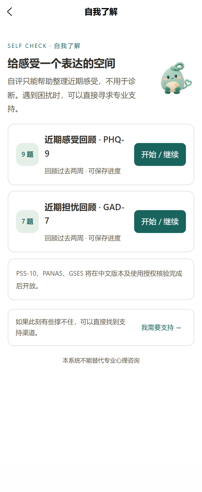
05 / 自我了解
把临床量表放进疗愈 App
页面直接露出 PHQ-9、GAD-7 与题数。即使写了“不用于诊断”，这两个名字本身就会让用户以为自己正在被筛查。对一个非医疗产品，这是不该越过的线。
- 主流程删除 PHQ-9 / GAD-7
- 改成五维“身心状态”自查，不打分
- 临床量表只进独立科研模块，需知情同意与专业人员
改造：状态自查，不是诊断
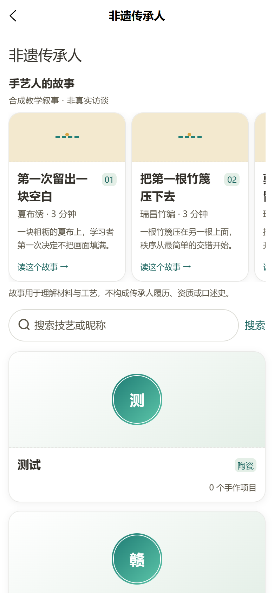
06 / 非遗传承人
测试数据 + 合成故事 + 横向溢出
“测试”账号 0 个项目混在列表里；故事卡右侧被裁；页面明确标注“合成教学叙事·非真实访谈”。当用户来找真实的手艺人，这里给的是模板。
- 生产环境清掉测试账号
- 没有真实访谈就不进“传承人”主路径
- 横向卡片改单列，禁止溢出
改造：真实驻馆艺术家
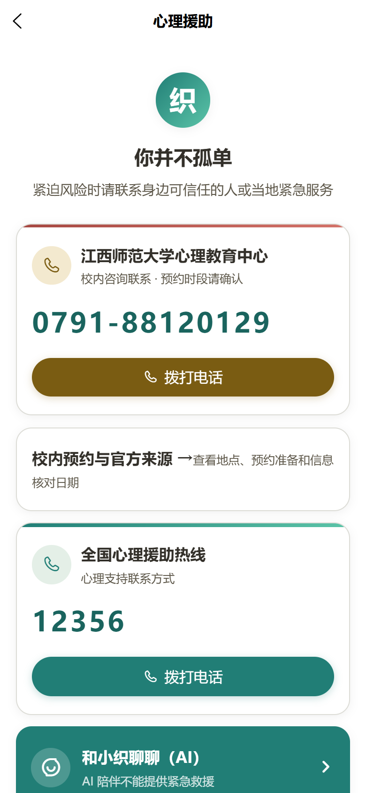
07 / 心理援助
最紧急的按钮是土黄色
校内热线的主按钮是橄榄褐/土黄，下面全国热线是绿色。紧急场景里，颜色语义完全反过来：最该被看见的动作最不显眼。
- 危机页只保留一个主行动：拨打电话
- 主按钮用朱砂，不用土黄/橄榄
- “AI 不能急救”放在按钮下方，不藏在卡片里
改造：一个动作，最高对比
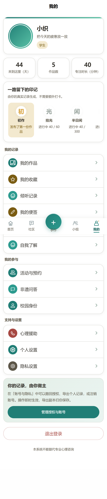
08 / 我的
头像空、成就被裁、图标像糖果
头像是一个纯色圆；“半日闲 40/300”被容器裁掉；作品、收藏、倾听、便签用四种不同颜色的圆图标。它像一个未配置完成的个人中心。
- 头像用纹样指纹或姓氏印章，不用空圆
- 成就改“作品档案”，不做进度条
- 图标统一 1.5px 线稿，语义色只三种
改造：作品档案，不是游戏面板
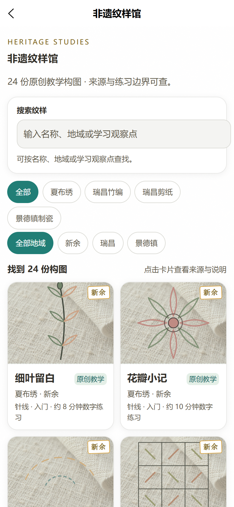
09 / 纹样馆
全站唯一对的方向，被藏在子包
真实的织物底图、手绘针法、编号与标签，已经有“档案”的气质。但它不在主路径上，首页只用一张米黄卡片指向它。
- 升为一级入口“纹样”
- 加暗色观展模式、双指放大、针法动画
- 每片纹样给来源、结构、用途与练习
改造：纹样档案馆
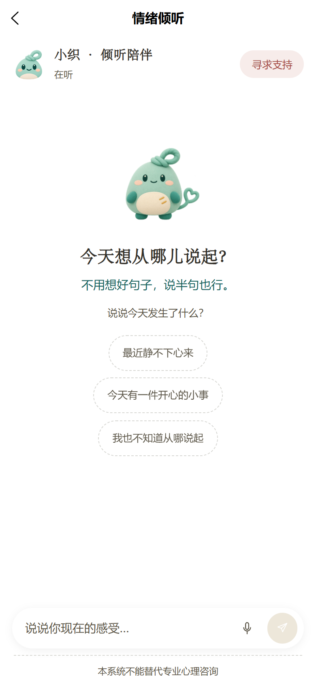
10 / 情绪倾听
像客服，不像倾听室
大头像、绿气泡、快捷胶囊，和售前客服同一套语言。用户在这里要的是安静，不是被引导着继续点按钮。
- 玄墨底色 + 一束光，不要整屏绿
- 消息改成排版行，不做气泡
- 小织缩到 24px 线稿，记忆用一行“我记得…”
改造：倾听室
全部 56 页：问题与动作
按严重度筛选。P0 失真/阻断/安全；P1 系统性视觉；P2 打磨。
02
先回答那个不客气的问题
非遗艺术，
真能达到“疗愈”吗？
能，但不是以现在这个方式。更准确地说：手作、材料、叙事与社群的组合，有证据支持它对情绪与联结产生积极作用；“非遗”三个字本身，不产生任何疗效。
第一层 / 临床治疗
不能宣称。
艺术治疗是受过训练的专业，需要评估、诊断、伦理与督导。2026 年教育部才把“艺术治疗”正式列入本科专业目录，中央美院为首个布点院校。一个学生端产品，不能越过这条线。
第二层 / 支持性疗愈
有证据，但不大。
艺术治疗对抑郁症状有中等效果，对焦虑的证据弱且不显著；手作/纺织研究多为自报与质性研究，能改善情绪、目的感与联结，但长期效果与机制仍未被严格证明。
第三层 / 文化体验
机制成立。
真正起作用的不是“非遗”标签，而是五个条件：专注、触觉、节律、胜任、意义与连接。非遗的价值，是它天然携带材料、动作、纹样与代际故事，能把五个条件同时装进一次创作。
真迹 vs 复制品：看原作，皮质醇降得更多
2025 / 50 人 / preprint
在考陶尔德美术馆看原作，20 分钟后唾液皮质醇平均下降 22%；在实验室看同幅高清复制品，只下降 8%。IL-6 与 TNF-α 在原作组下降约 30% 与 28%，复制品组无变化。注意：这是预印本、样本小、未同行评审，但方向足够清楚：材料的“真”会进入身体。
Courtauld / King’s College London
关键洞察
“非遗”不是疗效成分。把手作拿掉、只留纹样符号，疗愈不成立；把手作留下、把非遗去掉，手作仍可能有用。所以非遗必须是材料、动作与叙事，不能只是壁纸。
可以说
- “这一次创作，可能帮你从情绪里退一步。”
- “手作与艺术参与，有研究支持其对放松、专注与联结的积极作用。”
- “这里是一个非医疗的创作与陪伴空间。”
- “如果你正在经历难以承受的时刻，请使用危机支持渠道。”
不能说
- “治疗抑郁 / 焦虑 / 失眠。”
- “替代心理咨询或药物。”
- “根据你的作品判断你的心理状态。”
- “非遗大师亲授”（除非有可核验的授权与身份）。
- “保证你会好起来。”
那现在的产品，为什么没有疗愈感？
没有真材料22 个手作 4 个封面、0 个视频；首页用一张折纸“品类参考图”。用户看到的是插画与渐变，不是纤维、竹丝、釉面。
没有真故事传承人页明确写“合成教学叙事·非真实访谈”，列表里还有 0 项目的“测试”账号。意义与身份这一层，直接漏了。
没有真社群18 件作品、16 件匿名、9 件有图。没有作品墙，也没有“一起做”的现场；社交联结这一层没有发生。
没有剂量设计首屏是 1/3/5/15 分钟呼吸，手作被压到第二屏。真正的 15–40 分钟创作流程，被拆成了步骤卡。
越过了边界PHQ-9 与 GAD-7 直接出现在“自我了解”，再配上“疗愈”叙事。这是把临床量表当成了情绪测试。
03
视觉尸检
为什么它看起来“旧”？
不是因为绿色，
是因为所有东西都一样重。
现在的设计并不是没有体系，而是体系用错了地方：暖纸底、暖金、纸纹、米白卡片把全部材料压成同一种“旧纸色”；绿色被当成万能油漆；卡片把所有内容切成同样大小；卡通小织把“陪伴”变成了“可爱”。
旧 DNA / 青玉案 · 暖纸青玉 v6
#F6F1E7
#FFFDF7
#D9A441
#217E76
#7A5C12
#E4DCCB
暖纸 + 暖金 + 米白卡
单看每个色都不丑。问题在于它们被当成“全站底色”：靛蓝放上去发灰，青瓷放上去发黄，朱砂放上去发褐。所有手作最后都变成同一种“旧纸滤镜”。
- 暖纸底占满全站，材料色失真
- 暖金 #D9A441 当强调色，像茶包装
- 危机页临时写死 #7A5C12 橄榄褐按钮
- 16–24px 圆角 + 灰色柔影，所有模块同权
--zy-serif 实际等于系统无衬线
旧首页上半段：米黄纹样卡、绿色胶囊、卡通小织在同一屏争夺注意力。
新 DNA / 一线 · 瓷面与布面
#F1F4F1
#111816
#0E5B53
#8FC7B8
#C4402F
#C8A45C
冷瓷白 + 墨 + 一根朱砂线
把底色退回“无色的瓷面”，让材料自己发声。朱砂只做一根线——它是缝线、是进度、是记忆的连接，也是全站唯一允许大面积出现的暖色。
- 冷瓷白做底，材料色不再被染黄
- 墨绿黑承担深度，替代灰色柔影
- 朱砂只出现在线、动作与警示
- 暖金只做金缮细线，不做大面积
- 宋体做标题，黑体做正文，恢复字阶
新基调：冷白布面、朱砂线、墨色背景。材料的“真”本身，就是视觉冲击。
色彩失焦暖底让所有材料偏黄，用户无法分辨夏布、竹篾、青瓷、宣纸的差别；非遗的“物质性”被抹平。
语义崩塌同一个 #217E76 同时表示主按钮、成功、信息、装饰、标签、悬浮球。颜色越多，越没有信息。
层级坍塌卡片、圆角、阴影把标题、正文、数据、按钮压成同一层。用户只能“扫”，不能“读”。
形象错位大头卡通小织出现在首页、空态、音乐、认证页。它让产品更像儿童手作盒，而不是当代工艺现场。
字体失声标题 18–20px、正文 12–13px、全部系统黑体；--zy-serif 被别名成 sans，编辑感从未真正发生。
不是审美品味
“土黄”不是某一个色号的问题，是全局暖滤镜 + 万能绿 + 同权卡片三件事叠加的结果。只换一个绿色，下一页还是会旧。
04
新视觉系统
瓷面是底，布面是图，
线是命。
“一线”不是装饰，是结构。它来自缝纫的动作，也来自江西的两张材料名片：景德镇的瓷、夏布绣的布。界面上所有重要关系——进度、记忆、连接、警示——都由同一根线承担。
把一根线放大到一米宽，
它就是一幅抽象画。
月白 / 日间
发现、阅读、展签、社区。冷瓷白底，墨字，窑青主按钮。像白天走进美术馆，光从侧面来。
窑青 / 手作
创作、纹样、材料、课程。深青底，影青线，材料图占 70%。像把手伸进釉缸与竹篾之间。
玄墨 / 夜
倾听、音乐、呼吸、危机。近黑底，一束光，朱砂线。不是“暗黑模式”，是夜里的一盏灯。
瓷白#F1F4F1
墨#111816
窑青#0E5B53
影青#8FC7B8
朱砂#C4402F
靛蓝#24395B
哑金#C8A45C
瓷白 全站底色。替代 #F6F1E7，去掉暖黄滤镜。
墨 标题与正文主色。替代 #33302A/#5C5648 的暖灰。
窑青 主按钮、链接、进度。比 #217E76 更深，压得住大图。
影青 次级信息、线条、暗底上的文字。不是装饰色。
朱砂 只做“一根线”、主行动、紧急。全站唯一高饱和暖色。
靛蓝 材料/工艺专属强调。扎染、蓝印花布、夜间的第二层。
哑金 只做金缮细线与修复隐喻，不做大面积填充。
烟灰 #6E7B75，辅助文本；不用于正文长段落。
把今天，
绣进一寸光里。
Title / 32–44一根竹篾压在另一根上面，秩序从最简单的交错开始。
Body / 16手作不是“做出一件东西”，而是把注意力从脑子里放回手上。你只需要看下一步。
Caption / 11夏布绣 / 12 分钟 / 入门 / 材料包在家
“展签”替代卡片
没有阴影、没有大圆角。一条顶线、一个编号、一个标题、三行元信息。像美术馆墙上的标签，信息清楚，气质安静。
手作档案 / 004瑞昌竹编
把第一根竹篾，压下去。
18 分钟 / 入门 / 竹篾 6 根
动作：挑、压、收边
按钮与图标
主按钮窑青实心；次按钮是文字 + 缝线；紧急用朱砂。图标统一 1.5px 线稿，语义色只三种。
图像规则
- 3:4 竖图，1200×1600，WebP，首屏 lazy
- 主体必须真实：纤维、竹丝、釉面、手部、工具
- 每张图给来源与授权；概念图明确标注 AI
- 禁止米黄渐变、矢量祥云、卡通灯笼、无信息插画
- 空态不用小织大图，用一句具体动作 + 一张材料局部
小织的新位置
保留小织，但把它从“主角”降为“标记”：24–40px 的织结线稿，只出现在对话头像、记忆提示、空态的一角。它不再站在首页正中央，也不再代替真实作品。
要
- 大图、大字、长留白；一屏只讲一件事
- 用材料色做小面积强调，底色保持无色
- 让“线”承担进度、记忆与连接
- 用真实工序照片，哪怕不完美
- 动效慢、少、可关；尊重 reduced motion
- 每页都有明确的“下一步”
不要
- 暖米色全局铺底、暖金大面积填充
- 绿色同时表示五种语义
- 16–24px 圆角 + 灰色柔影的卡片汤
- 卡通小织站在每个空态与首屏
- 用“非遗”插画代替真实手艺
- 把临床量表当情绪测试
落地令牌
/* theme v7 · 一线 */
--zy-canvas: #F1F4F1;
--zy-surface: #FFFFFF;
--zy-ink: #111816;
--zy-ink-2: #42524C;
--zy-muted: #6E7B75;
--zy-brand: #0E5B53;
--zy-brand-deep: #0A403B;
--zy-celadon: #8FC7B8;
--zy-cinnabar: #C4402F;
--zy-indigo: #24395B;
--zy-gold: #C8A45C;
--zy-line: #D3DED8;
--zy-radius: 0; /* 展签/图片 */
--zy-radius-control: 4px;
--zy-shadow: none; /* 用边界与明度，不用柔影 */
--zy-serif: "Noto Serif SC","Songti SC","STSong",serif;
--zy-sans: "Noto Sans SC","PingFang SC","Microsoft YaHei",sans-serif;
05
页面改造
先做三个“能记住”的页面，
再谈全站。
不要平均用力。首页、项目详情、纹样档案，是用户判断“这是不是一间美术馆”的三个瞬间。先把它们做到能截图传播，再把同一套语言复制到其余页面。
概念稿 / 只定视觉方向，不是已实现页面横向滑动查看
9:415G
织愈SUNDAY · 11.15
夏布绣 · 第 03 天
把今天，
绣进一寸光里。
12 分钟，一针一线。不用做完，先开始。
9:415G
‹瑞昌竹编
“一压一挑，秩序从交错开始。”
口述 / 传承人待核验 · 教学示例安全：竹篾较硬，附护指；12 岁以下需陪同。
9:415G
织愈 / 纹样赣南 · 夏布绣
水波纹 / 二上二下
纹样不是装饰，
是一套活的语法。
结构 / 二上二下来源 / 赣南
用途 / 衣缘授权 / 教学使用
十个页面，十条手术线
01 / 首页从“工具箱”变成“今日一器”
- 删掉数据行、情绪行、快捷入口、重复手作入口
- 首屏一张真材料大图 + 一句今日文案 + 一个动作
- 小织只留一行记忆提示，不再占视觉中心
- 底部取消中心悬浮球，五个文字入口
02 / 手作入口先给一件，不给十件
- 首屏只推荐一件，给“为什么是它”
- 3 / 15 / 30 分钟做成三个真实版本，不是三个胶囊
- 呼吸、音乐、绘色下沉到“缓一缓”
- “继续上次”用一根线的进度，不用卡片
03 / 项目详情像展签，不像商品页
- 3:4 封面占 45%，标题压在图上
- 传承人必须有姓名、技艺、授权与出处
- 安全未标注 → 禁止上架、禁止开始
- “这一针的来历”讲纹样与工序，不讲空泛疗愈
04 / 创作引导全屏工作室，不是步骤卡
- 一根线横跨屏幕，表示总进度
- 一屏只给一个动作 + 一句指令
- 震动反馈落在“穿过/压住/收边”
- 退出不弹道德审判，自动保存到“未完成”
05 / 作品社区展览墙，不是信息流
- 4:5 大图 + 作者一句话 + 材料/时长
- 发布必须带封面；无图不进社区
- “驻足”替代点赞，留言簿替代评论区
- 同纹样作品自动成组，形成“同一张纹样，不同的手”
06 / 情绪倾听玄墨倾听室
- 深墨底 + 一束侧光，不要整屏绿
- 消息用排版行，不用左右气泡
- 小织缩到 24px 线稿，记忆用一行“我记得…”
- 危机入口常驻底部，文案明确“AI 不能急救”
07 / 自我了解状态自查，不是临床筛查
- 删除 PHQ-9 / GAD-7 与题数
- 五维：睡眠 / 精力 / 情绪 / 专注 / 联结，用视觉刻度
- 不打总分、不给标签、不做诊断
- 高风险答案直接进危机支持，不进入“分析”
08 / 传承人驻馆艺术家，不是列表
- 只收真实、可核验的传承人/工坊
- 一位一页：工序短片、手部特写、口述、作品
- 没有访谈就不进主路径，教学示例单独标注
- 横向卡片改单列，杜绝右侧裁切
09 / 纹样馆升为一级“纹样”
- 月白/窑青双模式，像看展一样看纹样
- 双指放大到针脚，配结构线与针法动画
- 每片纹样：来源 / 结构 / 用途 / 授权
- “放进我的作品”生成可编辑色卡
10 / 我的与成长作品档案，不是游戏面板
- 头像用纹样指纹或姓氏印章，不留空圆
- 作品数、专注时长改“创作档案”
- 成就改“第一件 / 第 10 件 / 第一次合作”
- 修掉成就文字溢出与四色糖果图标
先删后加
这版不需要新增 20 个页面。先删掉首页一半模块、删掉临床量表、删掉空块推荐、删掉合成故事，再把省下来的空间还给一张真实的材料图。
06
内容与智能
不是所有非遗都适合
被做成“一次手作”。
把品类分成三层：可在家完成的、需要材料包的、只适合鉴赏的。每一层对应不同的动作、风险与内容形态。不要为了凑 SKU，把漆器、缂丝这类高门槛工艺硬塞进 15 分钟流程。
| 品类 | 一次动作 | 疗愈机制 | 上线形态 | 风险 / 边界 |
|---|
夏布绣 / 赣绣
江西 · 核心 | 穿针、起针、平针、收线 | 注意力锚定、触觉、节律、胜任感、地方身份 | 3 分钟“一针” / 15 分钟“一小段” / 40 分钟“一件” | 针尖；附护指与收纳；不承诺疗效 |
瑞昌竹编
江西 · 核心 | 挑、压、收边、起底 | 节律、空间秩序、手部力量、成就感 | 3 分钟“起底” / 18 分钟“小垫” / 40 分钟“小篮” | 竹刺与手部劳损；附护指、限时 |
景德镇捏塑 / 青瓷
江西 · 核心 | 揉、捏、盘、修坯 | 触觉落地、感官唤醒、掌控感、材料隐喻 | 3 分钟“揉一块泥” / 20 分钟“小器” / 45 分钟“修坯” | 粉尘/过敏；家用免烧泥；烧制不线上 |
瑞昌剪纸
江西 · 核心 | 折、剪、镂、展开 | 对称秩序、专注、惊喜、释放 | 3 分钟“一刀” / 12 分钟“小纹” / 30 分钟“窗花” | 剪刀风险；提供预刻/手撕版本 |
扎染
扩展 | 捆扎、浸染、氧化、拆线 | 不可预测、感官、等待、惊喜 | 20–45 分钟材料包；线下工作坊 | 染料、手套、通风；不宣称“排毒” |
绳编 / 中国结
扩展 | 绕、穿、抽、收 | 重复节律、口袋便携、完成感 | 10–30 分钟；通勤/宿舍 | 低风险；注意绳材过敏 |
木版拓印
扩展 | 上墨、覆纸、压印、揭起 | 即时反馈、触觉、版与纸的关系 | 10–20 分钟材料包 | 油墨误食/过敏；用无毒水性墨 |
香囊
扩展 | 配香、装袋、缝口 | 嗅觉记忆、安抚、赠予 | 15–30 分钟材料包 | 孕期/哮喘/过敏筛查；非药用 |
漆器 / 缂丝 / 云锦 / 银饰
鉴赏 | 看不做：慢看、放大、听工序 | 审美沉浸、敬畏、文化连接 | 3–8 分钟“慢看” / 大师短片 / 纹样档案 | 不提供家用制作；避免工艺简化 |
01 / 入境 60–90 秒
先看材料，不急着做
一张微距、一句来历、一次呼吸。让注意力从脑子落到手上。给一个“今天想留下什么”的意图，不给 KPI。
02 / 在手 15–40 分钟
一屏一个动作
3–5 步，每步一句话；一根线表示总进度；在“穿、压、收”处给震动；随时可暂停，退出不审判。
03 / 留痕 3 分钟
把过程留下来
拍一张过程图，写一句话，生成一枚纹样指纹。可保存、可分享、可不分享。没有分数，没有“疗愈指数”。
小织 2.0：少说话，会看事
当前的 AI 是一个“什么都答”的聊天框。新的智能应该是“在正确的时候，给一件正确的事”，并且能看见用户做出来的东西。
01 / 选
今日一器
根据时间、状态、记忆与材料库存，只选一件；用一句话说明“为什么是它”。每天最多一次主动提示，夜间静默。
02 / 看
看作品，不评分
用户拍下过程/成品，AI 给“一个观察 + 一个建议”：“这一针的走向很稳；边缘留白可以再松一点。”不诊断、不贴标签、不说“你真棒”。
03 / 生成
纹样指纹
把今天的心情、声音或名字，转成一块只属于你的纹样；语法来自真实针法/织法，不是随机贴图。它成为头像、作品封面与“我今天来过”的证据。
04 / 记
记得，但不越界
记忆只用于语气与推荐，不用于推断隐私；每条可查看、可修改、可删除；“小织记得的”永远有一键忘记。
05 / 查
纹样辞典，不是客服
每个回答带图、带出处、带传承人链接；不确定就说不确定。文化解释必须可核验，不能编造历史与师承。
06 / 听
环境声，不是背景音乐
织机、剪刀、雨、釉面出窑的细微声；默认静音，用户手势后播放；每段声音有来源与授权。
智能的边界，比智能本身更重要
小织可以做策展、陪伴、反馈与记忆，但不做诊断、不做治疗、不替代危机干预。
- 危机识别：自伤/绝望/暴力信号 → 立即给危机支持页，停止“疗愈”话术。
- 非医疗：不出现“治疗、诊断、康复、处方、疗效”等词；不根据作品判断心理状态。
- 真实性：不编造传承人、师承、年代、工艺来源；AI 生成图必须标注。
- 隐私：记忆加密、可删除、可导出；不做敏感推断，不把对话用于训练。
- 审计：所有 AI 输出过内容安全与人工抽检，落审计日志。
内容模型：把“非遗”写进字段，而不是文案
| 对象 | 必须有的字段 |
|---|
| craft_project | technique / pattern_ids / master_id / safety_level / safety_note / evidence_refs / cover_asset_id / video_asset_id / duration_variants / ritual_steps |
| master | verified / region / craft / consent / bio / film_asset_id / quote_source |
| pattern | source / structure / usage / license / zoom_asset / stitch_animation |
| work | cover_asset_id（必填）/ process_photos / artist_statement / pattern_id / duration / anonymous |
| asset | type / source / license / credit / alt_text / width / height |
07
12 周路线
先止血，再换骨，
最后才长血肉。
不要在旧地基上继续贴皮肤。前两周只做“让产品不再失真”的事；第三到六周换掉首页、详情、社区、纹样、倾听五个主场景；六周之后才做 AI 与线下。
0–2 周
止血
让页面先不说谎
不换设计系统，只清掉会破坏信任的东西。
- 主流程删除 PHQ-9/GAD-7；高风险答案转危机支持
- 安全未标注的手作禁止上架/开始；“赣绣王老师”类无出处信息下线
- 清理“测试”账号、演示作品、合成故事出主路径
- 修 56 页里的 P0：详情 404、横向溢出、头像空圆、成就裁切、土黄危机按钮
- 封面缺失：要么补真图，要么用“文字展签”兜底，禁止绿色空块
交付：P0 修复清单
+ 内容真实性审计
+ 危机页改版
2–6 周
换骨
五个主场景，先像一间美术馆
上线“一线”令牌与组件，只改五个页面，不铺全站。
- 首页“今日一器”、项目详情“展签”、创作“工作室”
- 社区“展览墙”、纹样“档案馆”、倾听“玄墨室”
- 4 个核心品类 × 3 个时长 = 12 个真实流程
- 100 张授权微距/工序图，0 张米黄插画
- 底部导航去中心球；全站图标收口
交付：H5 Beta
+ 12 个可用流程
+ 新组件库
6–12 周
长血肉
让小织真的“看见”
AI 不再只是聊天，而是策展、看作品、生成纹样。
- 作品照片的多模态反馈：一个观察 + 一个建议
- 纹样指纹：心情/声音 → 可复用图案
- 纹样辞典：每条答案带图、出处、传承人
- 小组“一起做”：同一张纹样，不同的手
- 无障碍、弱网、图片加载、真机验收
交付：公开 Beta
+ AI 功能灰度
+ 体验指标
12 周+
成为现场
把线上体验带回线下
校园工作坊、材料包、传承人驻馆、展览。
- 与江西本地传承人/工坊签授权与分成
- 每月一场“同一张纹样”共创展
- 材料包与课程预约形成复购
- 与心理学院做非临床的体验研究（需伦理审查）
交付：线下活动
+ 材料包
+ 研究合作
7 日回访完成一次后 7 天内再回来，目标 ≥ 30%
风险与对策
| 风险 | 表现 | 对策 |
|---|
| 非遗真实性 | 合成故事、无出处“大师”、测试账号混入 | 传承人认证与授权书；内容审核；教学示例单独分区；无来源不上架 |
| 工艺安全 | 竹刺、剪刀、染料、粉尘、过敏 | 安全分级；护具；替代材料；年龄/孕期/哮喘提示；线下工作坊保险 |
| 临床越界 | PHQ/GAD、疗愈承诺、AI 诊断 | 删量表；文案审查；危机流程；AI 禁止诊断；心理顾问复核 |
| AI 幻觉 | 编造历史、师承、工艺细节 | RAG 引用；不确定就拒答；人工抽检；审计日志 |
| 隐私 | 记忆、对话、作品图被误用 | 加密、可删除、可导出；不训练；最小化收集 |
| 成本 | 真实摄影、视频、材料包成本高 | 先做 4 个核心品类；与本地工坊共建；资产复用；分期拍摄 |
08
附录
来源、边界与
这份蓝图没做的事。
所有数据与结论都尽量给出处。做不到的地方也写清楚，避免把“概念图”当成“已实现”，把“自报改善”当成“临床疗效”。
资料与来源
数据口径
- 页面：56 个学生端路由（含子包），2026-11-15 本地 H5，真实后端 + student01。
- 手作：22 个未删除项目，16 个 status=1，4 个有 cover_url，0 个有 video_url。
- 作品：18 件未删除，9 件有 cover_url，0 个 video_url，16 件 anonymous。
- 页面问题分级为编辑判断，不是自动检测；截图见 assets/audit。
图像与素材
- 概念图：AI 生成（Seedream 5.5），仅用于方向示意，不是成品摄影。
- 页面截图：项目本地 H5 真实截图；不含真实用户隐私数据（演示账号）。
- 材料图：项目
static/library 中 yarn/clay/paper；仅作气质参考。
- 正式上线需重新拍摄/授权：4 个核心品类 × 3 个时长 × 至少 3 张（材料、手部、成品）。
这份蓝图没做的事
- 没有改任何业务代码；这是方向与验收标准，不是已实现版本。
- 没有做真机测试、真实模型人设评测、真实用户访谈。
- 没有拍正式素材；三张概念图不能替代授权摄影。
- 没有给出完整 UI 稿；三个概念稿只定“光、色、字、图”的关系。
- 没有把“疗愈”写成疗效；所有相关表述都限定在非医疗支持性体验。
如果只做一件事
先把“自我了解”里的 PHQ-9 / GAD-7 拿掉，再把首页的绿色空块换成一张真实材料图。前者决定产品是否越界，后者决定用户是否相信你真的懂非遗。